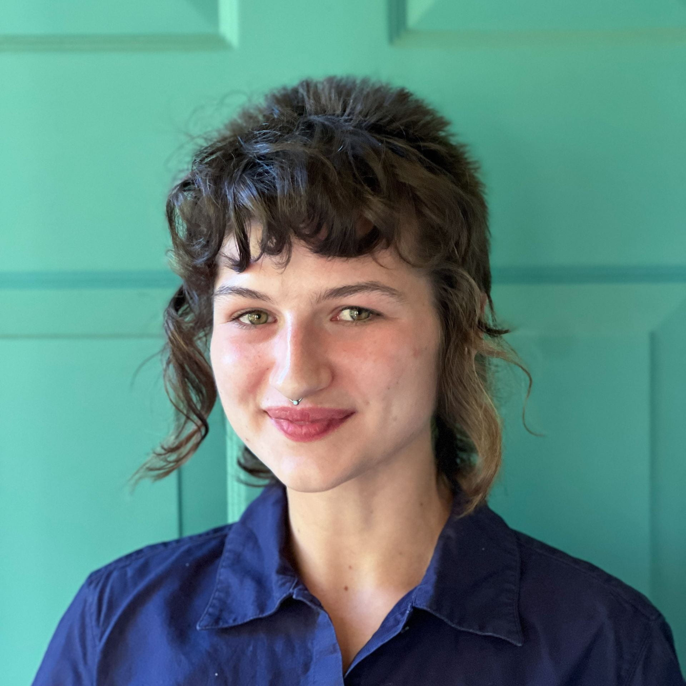

PhD Candidate
University of Oregon
Institute of Ecology and Evolution
crehmann@uoregon.edu
I'm a fifth-year PhD candidate in the Kern Ralph Co-Lab at the University of Oregon. I mostly code in Python and am raising a bearded dragon named Aeg (pronounced like what he came out of). When I'm not on the computer, I enjoy making art, going to shows, and being outside.
I'm primarily interested in studying geographic patterns of genetic variation, and I have a soft spot for infectious disease (especially vector-borne and zoonotic ones). In my research, I use simulation, statistics, and machine learning to make sense of the evolutionary forces that underlie genetic data. My current projects center around identifying geographic signatures of co-dispersal and selective sweeps in the Anopheles–Plasmodium system.
I've been on the board of UO Women in Graduate Science for four years and am also involved in GrEBES, the graduate student organization for my department. I think population genetics is super neat and it's important to me to help make the field (and science in general) more inclusive and accessible.